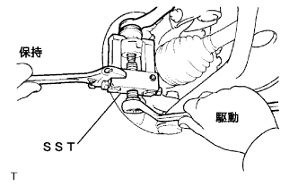

フロントトランスアクスルケース オイル シール NO.1（U340F） 取り外し |
| 1. フロントタイヤ取りはずし |
| 2. エンジンアンダ カバー LH取りはずし |
ボルト2本およびスクリュ2本をはずし、エンジンアンダカバーLHを取りはずす。
| 3. オートマチックトランスアクスルフルード抜き取り |
ソケットヘキサゴンレンチ10を使用して、ドレーンプラグおよびガスケットをはずしフルードを抜き取る。
新品のガスケットを介して、ドレーンプラグを締め付ける。
| 4. フロントアクスル シャフト ナット LH取りはずし |
 |
フロントドライブシャフトASSY LHの溝部に合わせてSSTをセットし、ハンマーを使用してかしめを解く。
ソケットレンチ(30mm)を使用して、フロントアクスルハブナット LHを取りはずす。
| 5. フロントディスクブレーキキャリパASSY LH取りはずし |
 |
ボルト2本をはずし、デイスクブレーキキヤリパASSYをステアリングナックルから切り離す。
ディスクとアクスルハブに合わせマークを付け、フロントディスクを取りはずす。
| 6. スピード センサ FR LH切り離し |
 |
スピードセンサFR LHのクリップおよびフレキシブルホースのボルトを取りはずし、フロントショックアブソーバASSY LHから切り離す。
 |
ボルトをはずし、スピードセンサFR LHをステアリングナックルから切り離す。
| 7. タイロッドエンドLH切り離し |
|  |
コッターピンおよびキャッスルナットを取りはずす。
SSTを使用して、タイロッドエンドLHをステアリングナックルから切り離す。
| 8. フロントアクスルASSY LH切り離し |
 |
ボルト2本およびナット2個をはずして、フロントショックアブソーバASSY LHからフロントアクスルASSY LHを切り離す。
プラスチックハンマーを使用して、フロントドライブシャフトASSY LHの先端を軽くたたき、フロントドライブシャフトASSY LHとフロントアクスルASSY LHのかん合をはずす。
 |
フロントアクスルASSY LHを車両外側に押して、フロントドライブシャフトASSY LHをフロントアクスルASSY LHから抜く。
| 9. フロントドライブ シャフトASSY LH取りはずし |
 |
SSTをフロントドライブシャフトASSY LHの図の位置にかけて取りはずす。
| 10. フロントトランスアクスルケース オイル シール NO.1取りはずし |
SSTを使用して、オイルシールを取りはずす。